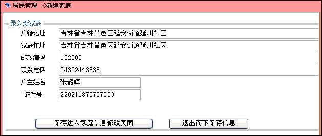

新建家庭
点击菜单“居民管理>>新建家庭”，进入新建家庭页面，如下所示
填入姓名、证件类型、证件号码，各项不能为空，如果证件类型选中“身份证”，系统对填入证件号码的值进行身份证校验，然后点击“查询”，如果存在该成员，则显示相应包含此家庭成员的家庭，如下所示
如果没有检索到符合的家庭成员，页面跳转到“新建家庭”页面，在新建家庭页面中，需要填写家庭的基本信息，并且户主的姓名和证件号码不可以修改，如下所示

点击按钮“保存进入家庭信息修改页面”，进入家庭信息维护界面，完善此家庭信息。
居民数据库功能使用说明
家庭资料修改
家庭基本信息维护
家庭成员维护
家庭分类维护
家庭收入维护
家庭支出维护
资产信息维护
居住情况
家庭证明材料
多媒体资料